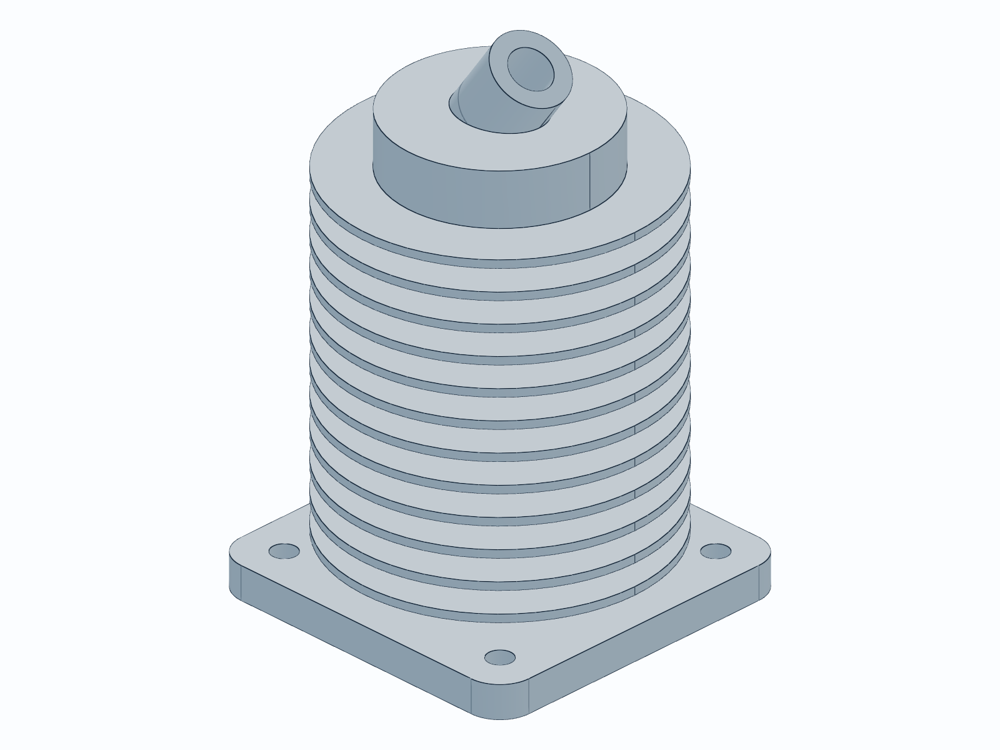

AICAD
Natural Language 3D CAD Generation
Bridging generative AI and parametric boundary-representation modeling workflows. Speak in prose, engineer in solid code models, compile watertight STEP assets.
Limitations of Standard 3D AI
Polygonal Mesh Output
Existing 3D generators produce STL/OBJ triangles, which cannot be imported as editable bodies into standard CAD suites (SolidWorks/Fusion 360).
No Parametric Features
Mesh representations lack mathematical descriptors. You cannot adjust diameters, offset dimensions, or slide holes parametrically.
Unsuited for CNC & Moldings
Precision manufacturing demands mathematically perfect geometries (B-Rep solids) to compute precise toolpaths or drafts.
Deterministic CAD Compilation
Prose-to-Code Framework
The AI translates descriptive prompt specifications directly into clean, structured Python code using CAD packages.
Mathematical B-Rep Solids
Code compiles using the industrial-grade OpenCascade geometry kernel to output native STEP solids.
Fully Editable Source
Allows engineers to modify the generated Python script parameters or open the STEP file to continue manual detailing.
End-to-End Generative Flow
Input Prompt
Prose description entered in UI (e.g. "Mounting bracket with countersinks")
CAD AI Agent
Gemini Agent plans coordinates, resolves spacing, and writes Python script
Solid Engine
Python script runs via OCP (OpenCascade) to build and validate the STEP solid
Formats & UI
Exports STL/3MF/DXF mesh; renders model interactively in WebGL viewer
The Modeling Core: build123d
Unlike traditional CSG (Constructive Solid Geometry) scripts, build123d provides a state-of-the-art Python interface to model with modern professional paradigms.
Sketch, Extrude, Fillet
Allows building geometry naturally: drawing 2D profiles, extruding/revolving into 3D, and performing boolean modifications.
Joint Mates & Coordinates
Align parts, clearance holes, and counterbores using named local locations on faces, bypassing manual coordinates math.
Deterministic Validation
Each compiled shape is checked for mathematical validity: closed shells, positive volumes, and valid topology counts.
from build123d import *
# Draw a plate with two M5 bolt holes
with BuildPart() as plate:
with BuildSketch() as sk:
Rectangle(50, 40)
Extrude(amount=6)
# Locate faces and position clearance holes
top_face = plate.faces().sort_by(Axis.Z)[-1]
with BuildSketch(top_face) as hole_sk:
# Distance center to center 30mm
GridLocations(30, 0, 2, 1)
Circle(2.7) # M5 clearance radius
Extrude(amount=-6, mode=Mode.SUBTRACT)
# Export STEP solid file
plate.part.export_step("plate.step")Interactive Workspace App
Real-Time Agent Progress
Stages are tracked dynamically: Request Queued → Agent Woken Up → Writing Python Code → Compiling STEP Model → Generating Snapshot.
Three.js WebGL Interactive Viewer
Interactively rotate, zoom, and inspect generated 3D STL meshes directly in your web browser. Switch to wireframe mode to check inner surfaces.
Direct Exports & Downloads
Instantly download industrial-standard STEP files, clean STL meshes, or copy the compiled python generator source code with one click.

AICAD Workspace App with rendered model snapshotCompiled CAD Showcase
The agent successfully translates multi-feature constraints into complete 3D models.
1. Parametric Engine Cylinder
Features a central piston bore, mounting flange base with bolt circle mounting patterns, and multiple radial cooling fins compiled parametrically.
2. L-Bracket Mounting Plate
A structural 90-degree bracket: 50x50mm legs, 4mm thickness, fitted with dual M4 clearance hole slots on both flat surfaces.
3. M5 Hexagonal Clearance Nut
A 10mm flat-to-flat spacing nut with 5mm depth thickness and a central clearance inner bore cylinder for fitting screws.


Achievements
Zero-Shot Solid CAD Generation
Validated that prose specifications can successfully compile complex mechanical bodies (watertight manifolds, fillets, parameters).
Standard B-Rep Output
Ensured files are exportable into full commercial engineering toolchains (Fusion 360, CNC machining) by targeting STEP format.
Developer-First Environment
Constructed an automated execution environment (using Python and uv) integrated with an interactive real-time browser preview portal.
The Future: Multi-Part & Mating
Multi-Part Mechanical Assemblies
Extend the AI planner to output assembly scripts containing mated joints, pins, and dynamic motion parameters.
Automated 2D Engineering Prints
Generate standard technical drawing sheets with automated front/top/side projection views, center lines, and dimensions in DXF.
Offline Desktop IDE Integration
Plug generation endpoints directly into FreeCAD or SolidWorks macro managers to render designs straight inside the local editor.